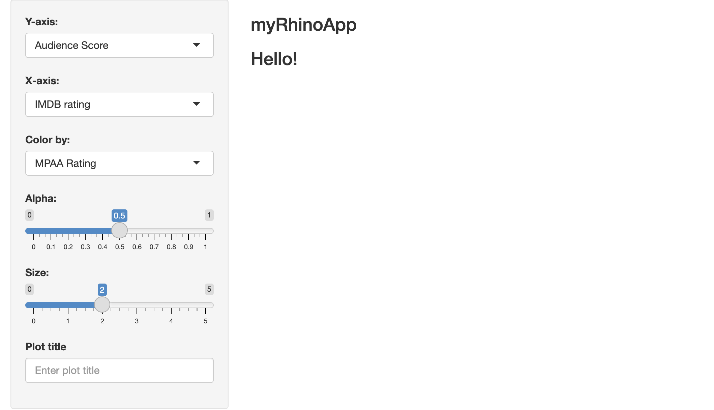
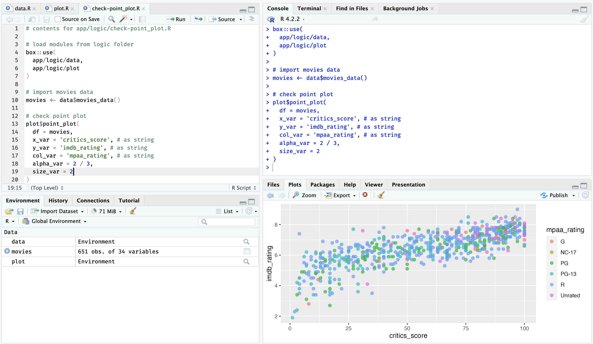
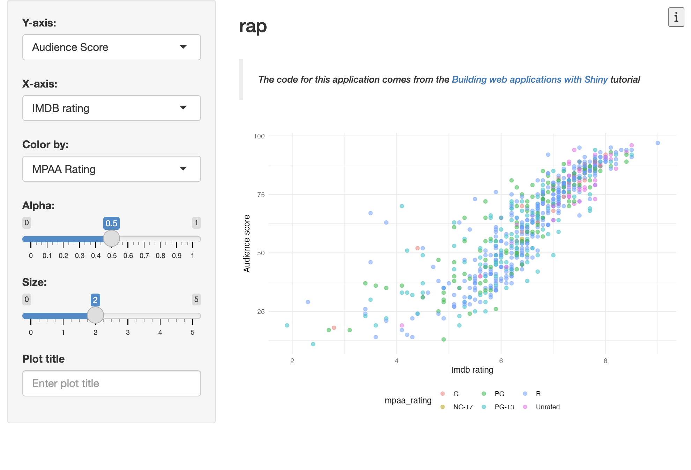

The following package(s) will be updated in the lockfile:
# CRAN ------------------------------------------------------
- renv [* -> 1.0.3]
# GitHub ----------------------------------------------------
- testthat [* -> r-lib/testthat@HEAD]
# RSPM ------------------------------------------------------
< < < < < < < OMITTED > > > > > > > >
The version of R recorded in the lockfile will be updated:
- R [* -> 4.3.1]
- Lockfile written to "~/projects/dev/brap/renv.lock".
- Project '~/projects/dev/brap' loaded. [renv 1.0.3]
✔ Initialized renv.
✔ Application structure created.
✔ Unit tests structure created.
✔ E2E tests structure created.
✔ Github Actions CI added.the rhino framework
rap
rhino apps aren’t packages. Instead, they use the box package to build modules, which ‘completely replaces the base R library and require functions.’
Start
To create a new rhino application:
- Select Project > New Project > New Directory, and Shiny Application using rhino
The New Project Wizard will require a Directory name and subdirectory. I’ve also left Github Actions CI selected (the default)
This initializes the new rhino app by opening the .Rproj file in RStudio.
If I wanted to create the rap application from the console, I would use the following:
install.packages("rhino")
rhino::init("/Users/mjfrigaard/projects/rap")The initial folder structure for a new rhino app is below:
rap/
├── app
│ ├── js
│ ├── logic
│ ├── main.R
│ ├── static
│ ├── styles
│ └── view
├── app.R
├── brap.Rproj
├── config.yml
├── dependencies.R
├── renv
│ ├── activate.R
│ ├── library
│ └── settings.json
├── renv.lock
├── rhino.yml
└── tests
├── cypress
├── cypress.json
└── testthat
12 directories, 10 filesThe rhino package website has excellent documentation on their app structure philosophy, and it’s worth reading through this before getting started. I’ll do my best to summarize the application’s files below:
app/
The app/ folder contains the primary folder and files:
app/
├── js/
│ └── index.js
├── logic/
│ └── __init__.R
├── main.R
├── static/
│ └── favicon.ico
├── styles/
│ └── main.scss
└── view/
└── __init__.R
6 directories, 6 filesjs/: thejsfolder initially contains a blankindex.jsscript
logic/: thelogicfolder contains code independent from Shiny
logic/__init__.Ris originally blank, but provides a link to the website section on project structure
# Logic: application code independent from Shiny.
# https://go.appsilon.com/rhino-project-structurestatic/: thestatic/folder will contain external resources (like JavaScript files) and is similar to the sub-folders ininst/fromgolemandleprechaunstyles/: thestyles/folder will hold custom styles (CSS and HTML) in thestyles/main.cssfile (which is initially blank)view/: theview/folder holds the code which describes the user interface of your application and relies upon the reactive capabilities of Shiny.view/__init__.Ris also initially blank, but provides a link to the website section on project structure
# View: Shiny modules and related code.
# https://go.appsilon.com/rhino-project-structuremain.R: themain.Rfile contains theuiandserverapplication code
app/main.Rcontains the code for the application I see when I runrhino::app()
box::use(
shiny[bootstrapPage, moduleServer, NS, renderText, tags, textOutput],
)
#' @export
ui <- function(id) {
ns <- NS(id)
bootstrapPage(
tags$h3(
textOutput(ns("message"))
)
)
}
#' @export
server <- function(id) {
moduleServer(id, function(input, output, session) {
output$message <- renderText("Hello!")
})
}box::use()?
If box’s syntax looks strange–don’t worry! It looked strange to me too at first. But it’s actually something special with those roxygen2 tags. I’ll cover it more in the Build section below.
app.R
app.Ris the file that will run my application and contains therhino::app()function:
# Rhino / shinyApp entrypoint. Do not edit.
rhino::app()rhino has a ‘minimal app.R’ philosophy, and the call to rhino::app() performs multiple operations beyond shiny::runApp()
config.yml
config.ymlis a YAML file that follows theconfigpackage format. This file initially contains two calls toSys.getenv():
default:
rhino_log_level: !expr Sys.getenv("RHINO_LOG_LEVEL", "INFO")
rhino_log_file: !expr Sys.getenv("RHINO_LOG_FILE", NA)- Read more about how to use
config.ymlin the Environments section of the How to: Manage secrets and environments vignette.
dependencies.R
dependencies.Ris an.Rscript that contains any other packages used by the application. Using this file is covered in the Manage Dependencies vignette on the package website.
As I can see from the note in the comments, the dependencies will be tracked using packrat in rsconnect.
# This file allows packrat (used by rsconnect during deployment)
# to pick up dependencies.
library(rhino)- I know I’ll be using
ggplot2,stringr,rlang, andbslibin this application, so I’ll load those there.
rhino::pkg_install(c("ggplot2", "stringr", "rlang", "bslib"))- This will automatically update
dependencies.Randrenv
renv/
- The
renv/folder contains the R version and packages used to build the application:
rap/
├── renv/
│ ├── activate.R
│ ├── library/
│ │ └── R-4.2
│ │ └── x86_64-apple-darwin17.0
│ ├── sandbox/
│ │ └── R-4.2
│ │ └── x86_64-apple-darwin17.0
│ └── settings.dcf
└── renv.lockrenv.lockcontains the packages and R version used in the application. Read more about getting started withrenv.
rhino.yml
rhino.ymlis the configuration file and contains options for setting how Sass is built or for importing from another application structure torhino.- the code below showcases the optional arguments (and is not included in the application)
sass: string # required | one of: "node", "r" legacy_entrypoint: string # optional | one of: "app_dir", "source", "box_top_level"- Read more about
rhino.ymlin the Explanation: Configuring Rhino - rhino.yml vignette.
tests/
tests/contains two sub-folders,cypress/andtestthat/:tests/ ├── cypress/ │ └── integration/ │ └── app.spec.js ├── cypress.json └── testthat/ └── test-main.R
cypress/
tests/cypress/holds folders for using the Cypress web and component testing framework.- This is also covered in the ‘Use
shinttest2vignette’.
tests/ ├── cypress/ │ └── integration/ │ └── app.spec.js └── cypress.json- This is also covered in the ‘Use
testthat/
tests/testthat/contains the architecture for writing tests with testthatrhinoalso has a helper function for running all tests in thetestthat/folder (rhino::test_r())
tests/ └── testthat/ └── test-main.R
Build
Unlike the previous applications in this series, rhino applications don’t use the NAMESPACE and DESCRIPTION to manage dependencies. Instead, they use the box modules to explicitly import packages and functions
box

rhino apps use box to create modules, which is handy, because it’s specifically designed for writing “reusable, composable and modular R code”
Quick refresher: if I’m building a shiny app,
I’ll install packages using
install.packages('<package>')When I want to use an installed package, I run
library(<package>), which loads the package namespace ‘and attach[es] it on the search list’If the application gets converted into an R package, I track dependencies in the
DESCRIPTIONand usepkg::fun()(or addroxygen2tags@importFromor@import, which are converted intoNAMESPACEdirectives)
So, I run library(<package>) to load the entire package namespace when I want to use a function, but when developing R packages, it’s recommended I use pkg::fun() to specify the package and function.
Put another way,
“If I only need one or two items from a package, why am I loading everything in the namespace with library()?“
This is where box comes in–it’s designed to ‘completely replace the base R library and require functions’.
A box module is essentially just an R script in a folder. However, in box::use(), instead of loading packages and functions using library() or ::, I can encapsulate and explicitly import packages and functions in these R scripts using the syntax package[function].
- The module below imports the
foo()andbar()functions from thepkgpackage in themod.Rfile (in thebox/folder)
# contents of box/mod.R
#' @export
box::use(
pkg[foo, bar]
)- I can now access
foo()andbar()frommod.Rusingbox::use(box/mod):
# using contents of box/mod.R
box::use(
box/mod
)This has been a very brief overview of box, so I highly recommend consulting the box website and vignettes (especially “the hierarchy of module environments”). The rhino website also has a great overview on using box with shiny apps (I also have a collection of box module examples in this repo.)
Modules
Now that I’ve covered a bit on how box modules work, I am going to create the application modules. New modules should be created in the app/view/ folder.
The first module we’ll create is the app/view/inputs.R module for collecting the user inputs
The code below is placed in
app/view/inputs.RClick Code to see
app/view/inputs.R# app/view/inputs.R # define module functions box::use( shiny[ NS, tagList, selectInput, h3, sliderInput, textInput, moduleServer, reactive ], ) #' input values UI #' @export ui <- function(id) { ns <- NS(id) tagList( selectInput( inputId = ns("y"), label = "Y-axis:", choices = c( "IMDB rating" = "imdb_rating", "IMDB number of votes" = "imdb_num_votes", "Critics Score" = "critics_score", "Audience Score" = "audience_score", "Runtime" = "runtime" ), selected = "audience_score" ), selectInput( inputId = ns("x"), label = "X-axis:", choices = c( "IMDB rating" = "imdb_rating", "IMDB number of votes" = "imdb_num_votes", "Critics Score" = "critics_score", "Audience Score" = "audience_score", "Runtime" = "runtime" ), selected = "imdb_rating" ), selectInput( inputId = ns("z"), label = "Color by:", choices = c( "Title Type" = "title_type", "Genre" = "genre", "MPAA Rating" = "mpaa_rating", "Critics Rating" = "critics_rating", "Audience Rating" = "audience_rating" ), selected = "mpaa_rating" ), sliderInput( inputId = ns("alpha"), label = "Alpha:", min = 0, max = 1, step = 0.1, value = 0.5 ), sliderInput( inputId = ns("size"), label = "Size:", min = 0, max = 5, value = 2 ), textInput( inputId = ns("plot_title"), label = "Plot title", placeholder = "Enter plot title" ) ) } #' input values server #' @export server <- function(id) { moduleServer(id, function(input, output, session) { return( list( "x" = reactive({ input$x }), "y" = reactive({ input$y }), "z" = reactive({ input$z }), "alpha" = reactive({ input$alpha }), "size" = reactive({ input$size }), "plot_title" = reactive({ input$plot_title }) ) ) }) }
Init files
Back in the app/view/ folder, I want to use the app/view/inputs.R function in the app/main.R. I can do this by adding a __init__.R file in the app/view/ folder with the following contents:
The
__init__.Rfiles are covered on therhinowebsite:# View: Shiny modules and related code. # https://go.appsilon.com/rhino-project-structure #' @export box::use( app/view/inputs)After composing the module in
app/view/input.R, I add theinputmodule to theapp/main.Rfile just like the examples above:- Note that I’ve added the necessary functions for using a
fluidPage()layout (instead of the defaultbootstrapPage())
Click Code to see
app/main.R# app/main.R box::use( shiny[ NS, fluidPage, sidebarLayout, sidebarPanel, mainPanel, tags, textOutput, moduleServer, renderText ], ) # load inputs module ---- box::use( app/view/inputs, ) #' @export ui <- function(id) { ns <- NS(id) fluidPage( sidebarLayout( sidebarPanel( # use inputs module UI ---- inputs$ui(ns("vals")) ), mainPanel( tags$h3("rap"), tags$h3(textOutput(ns("message"))) ) ) ) } #' @export server <- function(id) { moduleServer(id, function(input, output, session) { # use inputs module server ---- inputs$server("vals") output$message <- renderText("Hello!") }) }- Note that I’ve added the necessary functions for using a
After saving both app/view/inputs.R and app/main.R, I can click Run App in app.R and check the output:

inputs.R moduleThe display.R module will show the graph output, but I know this module will require adding the movies data and the scatter_plot() function (both of which I’ll cover below).
Logic
rhino apps come with an app/logic/ folder, which is used to store code for “data manipulation, generating non-interactive plots and graphs, or connecting to an external data source, but outside of definable inputs, it doesn’t interact with or rely on shiny in any way.”
The
scatter_plot()function definitely meets the definition above, so I will write two modules inapp/logic:datafor importing themoviesdata, andplotfor creating a scatter plot withscatter_plot()app/logic/data.R: importsmoviesfrom my GitHub repo with all the shiny frameworks. Using data inbox()modules is tricky (and its a known, issue), but this method works for my application.
Click Code to see
app/logic/data.R# contents of app/logic/data.R #' @export box::use( readr[get_csv = read_csv, cols] ) #' @export movies_data <- function() { raw_csv_url <- "https://bit.ly/3Jds4g1" # use alias for read_csv() get_csv(raw_csv_url, col_types = cols()) }- The second module,
app/logic/plot.R, holds thescatter_plot()function:
# contents of app/logic/plot.R #' point plot function #' @export scatter_plot <- function(df, x_var, y_var, col_var, alpha_var, size_var) { box::use( ggplot2 = ggplot2[...] ) ggplot( data = df, aes( x = .data[[x_var]], y = .data[[y_var]], color = .data[[col_var]] ) ) + geom_point(alpha = alpha_var, size = size_var) }- The
__init__.Rfile inapp/logiccontains the following:
# Logic: application code independent from Shiny. # https://go.appsilon.com/rhino-project-structure #' @export box::use( app/logic/data, app/logic/plot)- To make sure everything is working, I’ll also include a
app/logic/check-scatter_plot.Rfile that contains the following:
# contents of app/logic/check-scatter_plot.R # contents for app/logic/check-scatter_plot.R # load modules from logic folder box::use( app/logic/data, app/logic/plot ) # import movies data movies <- data$movies_data() # check point plot plot$scatter_plot( df = movies, x_var = 'critics_score', # as string y_var = 'imdb_rating', # as string col_var = 'mpaa_rating', # as string alpha_var = 2 / 3, size_var = 2 )check-scatter_plot.Rimports the two logic modules (dataandplot), creates the movies data, and checks to see if the data and plotting function work:
After saving
app/logic/data.Randapp/logic/plot.R, I can run the code incheck-scatter_plot.R

app/logic/check-scatter_plot.R moduleThe app/view/display.R module can now call box::use() to import the app/logic/data and app/logic/plot.
The
app/view/display.Rmodule contains theuiand theserverfunctions:# app/view/display.R # import data and plot modules ---- box::use( app/logic/data, app/logic/plot ) #' display values ui ---- #' @export ui <- function(id) { box::use( shiny[NS, tagList, tags, plotOutput] ) ns <- NS(id) tagList( tags$br(), tags$blockquote( tags$em( tags$h6( "The code for this application comes from the ", tags$a("Building web applications with Shiny", href = "https://rstudio-education.github.io/shiny-course/" ), "tutorial" ) ) ), plotOutput(outputId = ns("scatterplot")) ) } #' display values server ---- #' @export server <- function(id, var_inputs) { # load plotting, shiny, tools, and stringr functions box::use( ggplot2 = ggplot2[...], shiny[NS, moduleServer, plotOutput, reactive, renderPlot], tools[toTitleCase], stringr[str_replace_all] ) moduleServer(id, function(input, output, session) { # use data$movies_data() ---- movies <- data$movies_data() inputs <- reactive({ plot_title <- toTitleCase(var_inputs$plot_title()) list( x = var_inputs$x(), y = var_inputs$y(), z = var_inputs$z(), alpha = var_inputs$alpha(), size = var_inputs$size(), plot_title = plot_title ) }) output$scatterplot <- renderPlot({ # use plot$scatter_plot() ---- plot <- plot$scatter_plot( df = movies, x_var = inputs()$x, y_var = inputs()$y, col_var = inputs()$z, alpha_var = inputs()$alpha, size_var = inputs()$size ) plot + labs( title = inputs()$plot_title, x = str_replace_all( toTitleCase( inputs()$x ), "_", " " ), y = str_replace_all( toTitleCase( inputs()$y ), "_", " " ) ) + theme_minimal() + theme(legend.position = "bottom") }) }) }
In app/main.R, I can place the display module in call to box::use(), then:
Add
display$ui()to themainPanel()In the
server, the output frominputs$server()is assigned toselected_vars, which becomes thevar_inputsinput fordisplay$server():# app/view/main.R # shiny functions box::use( shiny[NS, fluidPage, sidebarLayout, sidebarPanel, mainPanel, tags, textOutput, moduleServer, renderText] ) # import modules box::use( # load inputs module ---- app/view/inputs, # load display module ---- app/view/display ) #' rap ui #' @export ui <- function(id) { ns <- NS(id) fluidPage( sidebarLayout( sidebarPanel( # use inputs module UI ---- inputs$ui(ns("vals")) ), mainPanel( tags$h3("rap"), tags$h3(textOutput(ns("message"))), # use display module UI ---- display$ui(ns("disp")) ) ) ) } #' rap server #' @export server <- function(id) { moduleServer(id, function(input, output, session) { # use inputs module server ---- selected_vars <- inputs$server(id = "vals") # use display module server ---- display$server(id = "disp", var_inputs = selected_vars) }) }
After saving app/view/data.R and app/view/display.R files, the app/view/ and app/logic/ folders contain the following modules:
app/logic/:app/logic/ ├── __init__.R ├── check-scatter_plot.R ├── data.R └── plot.R 1 directory, 4 filesapp/view/:app/view/ ├── __init__.R ├── display.R └── inputs.R 1 directory, 3 files
When I click Run App in app.R I should see the following output:

rapExternal scripts
It’s fairly straightforward to add external resources (i.e., JavaScript, CSS, Sass, etc.) to rhino apps. I’ll use the example from the website to demonstrate because it adds both CSS and JavaScript to the codebase.
The first place to add code is the UI in
app/main.R:- Update the call to
box::use()and include the layout functions (fluidRow,column,icon)
# app/view/main.R # shiny functions box::use( shiny[ NS, fluidPage, sidebarLayout, sidebarPanel, mainPanel, fluidRow, column, tags, icon, textOutput, moduleServer, renderText ] )- Update the
mainPanel()to include the title, info button, and display module:
mainPanel( fluidRow( column( width = 12, tags$h3("rap") ) ), fluidRow( column( width = 1, offset = 11, # example info button --- tags$button( id = "help-button", icon("info") ) ) ), fluidRow( column( width = 12, # use display module UI ---- display$ui(ns("disp")) ) ) )- The CSS added to
app/styles/main.cssis thecontainerfor the button.
// app/styles/main.scss .components-container { display: inline-grid; grid-template-columns: 1fr 1fr; width: 100%; .component-box { padding: 10px; margin: 10px; box-shadow: 0 4px 8px 0 rgba(0, 0, 0, 0.2), 0 6px 20px 0 rgba(0, 0, 0, 0.19); } } h1 { text-align: center; font-weight: 900; } #help-button { position: fixed; top: 0; right: 0; margin: 10px; }- Run
rhino::build_sass()to create theapp/static/css/app.min.cssfile (requires node.js)
rhino::build_sass()added 748 packages in 49s build-sass sass --no-source-map --style=compressed ../app/styles/main.scss:../app/static/css/app.min.css- This tells me
app.min.csshas been added to inapp/static/css/
app/static/ └── css └── app.min.css- Add the following to
app/js/index.js:
export function showHelp() { alert('Learn more about shiny frameworks: https://mjfrigaard.github.io/posts/my-rhino-app/'); }- Run
rhino::build_js()to build theapp/static/js/app.min.js(requires node.js)
rhino::build_js()build-js webpack asset app.min.js 502 bytes [emitted] [minimized] (name: main) runtime modules 670 bytes 3 modules ../app/js/index.js 126 bytes [built] [code generated] webpack 5.69.0 compiled successfully in 1300 ms- The output tells me the
app.min.jshas been created inapp/static/js
app/static/ └── js └── app.min.js- Back in
app/main.R, I add theonclickto themainPanel()
mainPanel( fluidRow( column( width = 12, tags$h3("rap") ) ), fluidRow( column( width = 1, offset = 11, # example info button --- tags$button( id = "help-button", icon("info"), # add 'onclick' after rhino::build_sass() # and rhino::build_js() onclick = "App.showHelp()" ) ) ), fluidRow( column( width = 12, # use display module UI ---- display$ui(ns("disp")) ) ) )- Update the call to
Now when I save everything and click ‘Run App’ in
app.RI should see the info button (and message):

.js to app/js/index.jsrap dependencies
rhino uses box, which ‘completely replaces the base R library and require functions.’
The files for the rhino app are below:
├── .Rbuildignore
├── .Rhistory
├── .Rprofile
├── .Rproj.user
├── .github
│ └── workflows
├── .lintr
├── .renvignore
├── .rscignore
├── README.md
├── app
│ ├── js
│ ├── logic
│ ├── main.R
│ ├── static
│ ├── styles
│ └── view
├── app.R
├── config.yml
├── dependencies.R
├── rap.Rproj
├── renv
│ ├── .gitignore
│ ├── activate.R
│ ├── library
│ ├── settings.json
│ └── staging
├── renv.lock
├── rhino.yml
└── tests
├── cypress
├── cypress.json
└── testthatrhino apps aren’t packages, so the dependencies are stored in rap/dependencies.R
readLines(con = "_apps/rap/dependencies.R")
# [1] "# This file allows packrat (used by rsconnect during deployment) to pick up dependencies."
# [2] "library(rhino)"
# [3] "library(ggplot2)"
# [4] "library(shiny)"
# [5] "library(rlang)"
# [6] "library(shinythemes)"
# [7] "library(bslib)"
# [8] ""
# [9] ""
# [10] ""Use
To run a
rhinoapplication, userhino::app()in theapp.Rfile.Most of the development takes place in
app/logicandapp/view(usingboxmodules). The separation of the ‘business logic’ workflow from the ‘app view’ code is similar to thedevfolder ingolemandleprechaun, but the modules make it easy to move code and functions back and forth between the two folders.The
app/js/index.jsandapp/styles/main.cssare used to include any custom CSS or JavaScript code, but you won’t create any new files (other thanindex.jsandmain.css).New JavaScript or CSS code is placed in
app/js/index.jsorapp/styles/main.cssand then the correspondingrhinofunction is run (rhino::build_js()orrhino::build_sass()). This requires installing node.js.These functions create output files in
app/static/js/app.min.jsandapp/static/css/app.min.cssthat are used in the application.
tests/functions like anytestthatfolder (and can be used withshinytest2) and comes with a helper function,rhino::test_r()